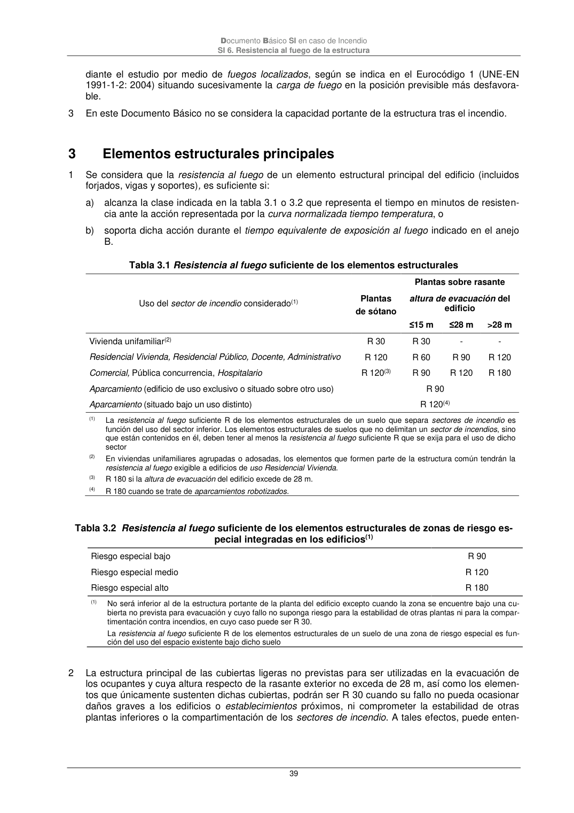

DB-SI Seguridad en caso de incendio · edición 2025-03-04 · capa oficial
Documento DB-SI-oficial · SHA-256 del PDF 0a2e78cd62471d9cc5cfe2efbc6aa39fdbad73c124aea7b039f9de96c141e105
Copia fiel del PDF fuente · Fuente oficial
Ficha de la disposición en la fuente oficial
Formatos: JSON del segmento · Markdown
Resistenciaal fuego de la estructura 1 Se admite que un elemento tiene suficiente resistencia al fuego si, durante la duración del incendio, el valor de cálculo del efecto de las acciones, en todo instante t, no supera el valor de la resistencia de dicho elemento. En general, basta con hacer la comprobación en el instante de mayor temperatu- ra que, con el modelo de curva normalizada tiempo-temperatura, se produce al final del mismo. 2 En el caso de sectores de riesgo mínimo y en aquellos sectores de incendio en los que, por su tama- ño y por la distribución de la carga de fuego, no sea previsible la existencia de fuegos totalmente desarrollados, la comprobación de la resistencia al fuego puede hacerse elemento a elemento me- Documento Básico SI en caso de Incendio SI 6. Resistencia al fuego de la estructura 39 diante el estudio por medio de fuegos localizados, según se indica en el Eurocódigo 1 (UNE-EN 1991-1-2: 2004) situando sucesivamente la carga de fuego en la posición previsible más desfavora- ble. 3 En este Documento Básico no se considera la capacidad portante de la estructura tras el incendio. 3
